☰
Voorgerechten
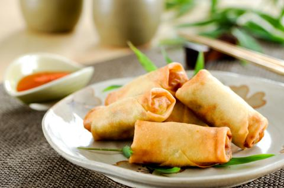
Vegetarische loempia's
Lekkere, knapperige vegetarische
mini loempia’s met |
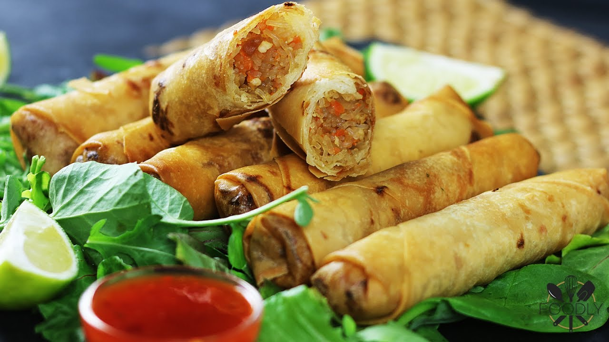
Kip loempia's
Een grote gefrituurde rol gemaakt van
een loempiavel, |

Wan tan soep
Heldere bouillon met gesneden paksoi, |
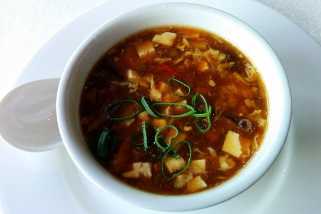
Pekingsoep
Deze pittige, zurige soep komt van
oorsprong uit Peking |
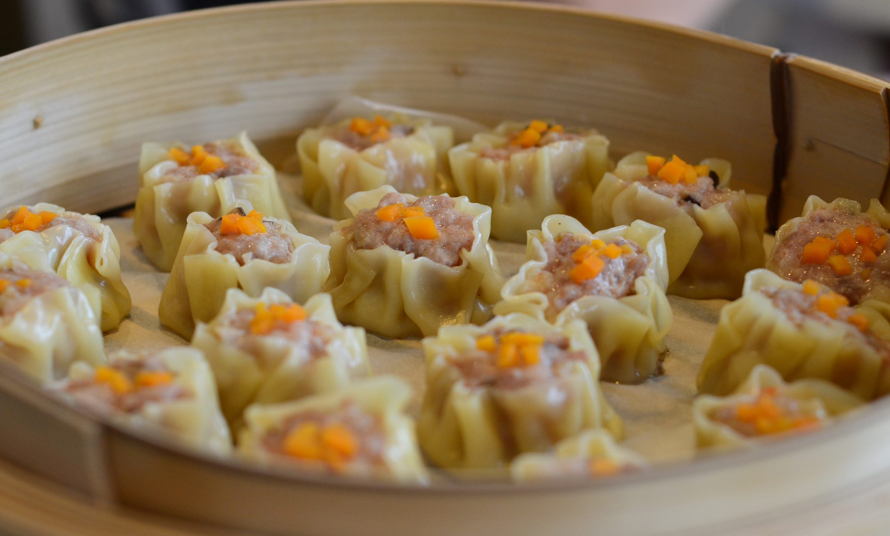
Siu mai
Siu mai is een gestoomde Chinese dumpling |
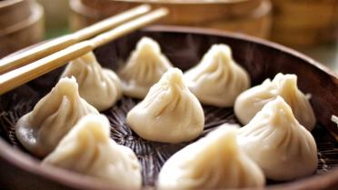
Dim sum
Dim sum (ook wel yum cha) is een categorie |
Hoofdgerechten
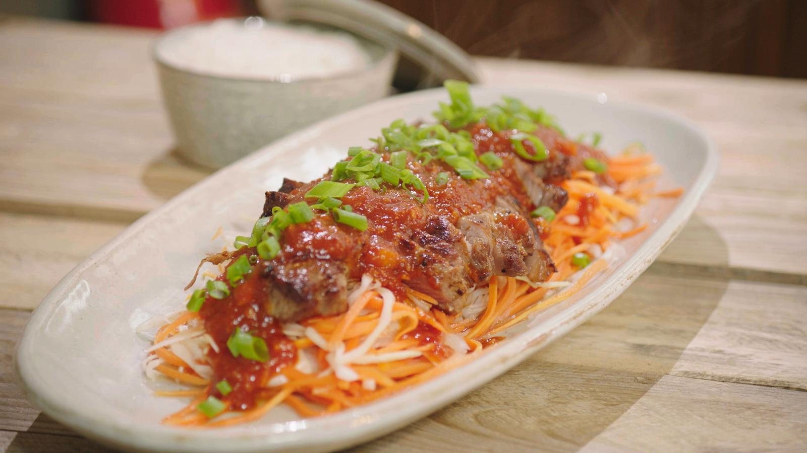
Bapi pangpang
Het bestaat uit gemarineerd en gegrild
varkensvlees |
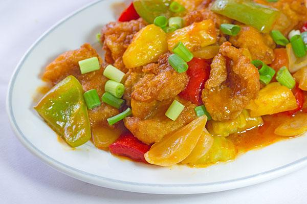
Koe loe yuk / koe loe kai
De Chinese gerechten koe loe yuk en
koe loe kai bestaan |
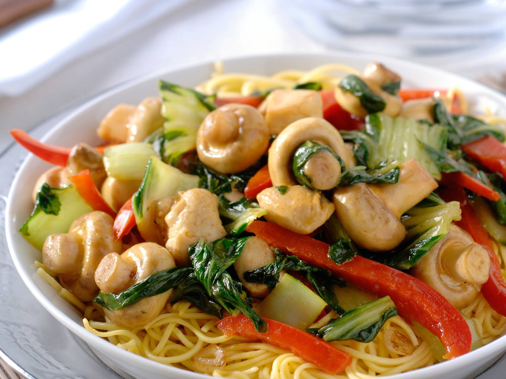
Tjap tjoy
Tjap tjoy betekent letterlijk gemengde
(tjap) groenten (tjoy) en is |
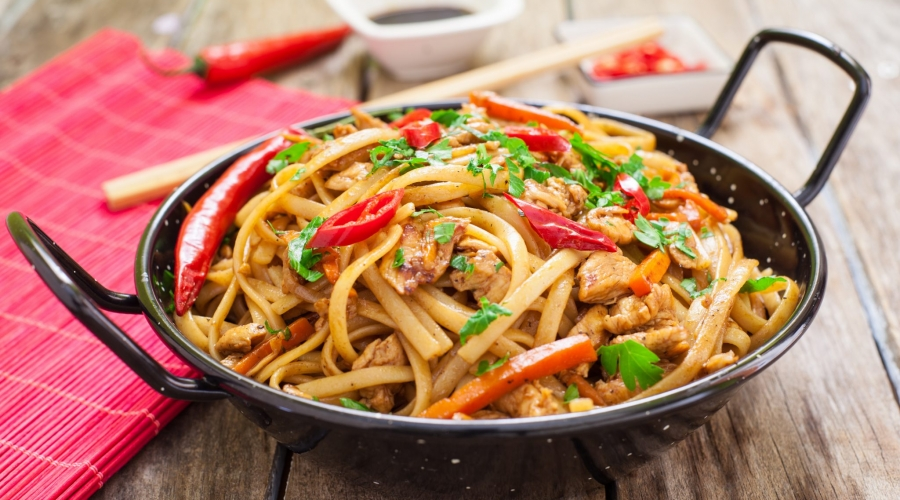
Chow mein
Chow mein is een Chinees gerecht van |

Mapo tofu
Ma po tofu is misschien wel het bekendste |
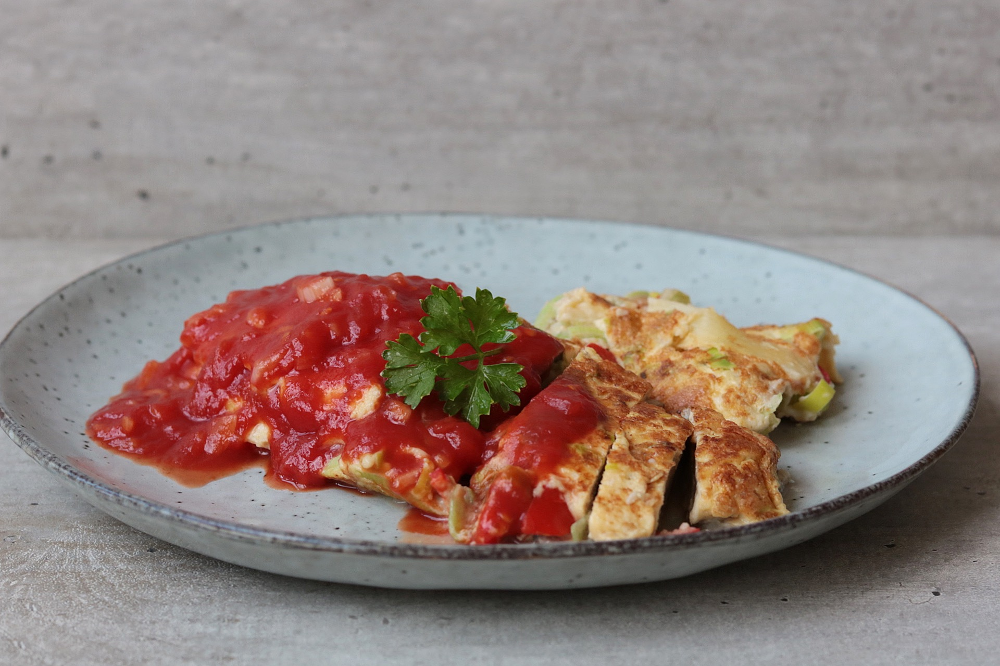
Vegetarische foe yong hai
Dit vegetarische basisrecept voor foe yong |
Nagerechten
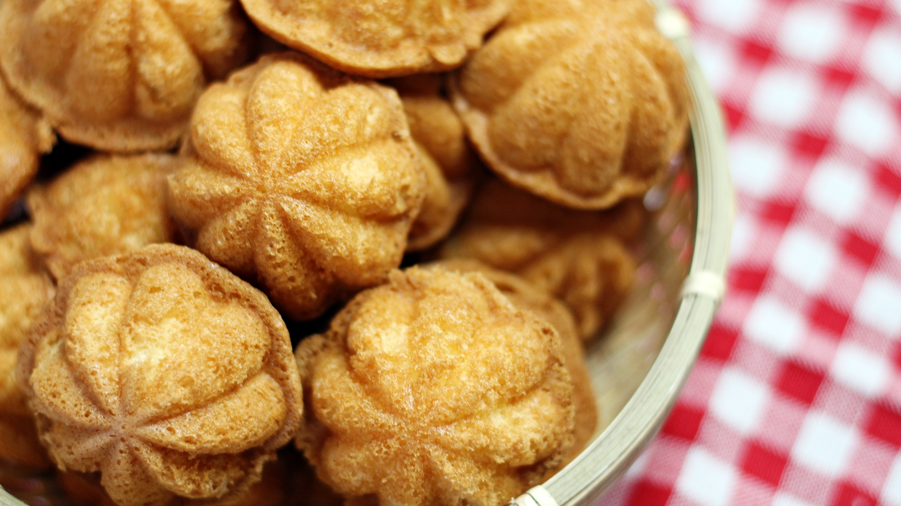
Ji dan gao
Het geheim van dit recept voor Chinees
biscuitgebak ligt |
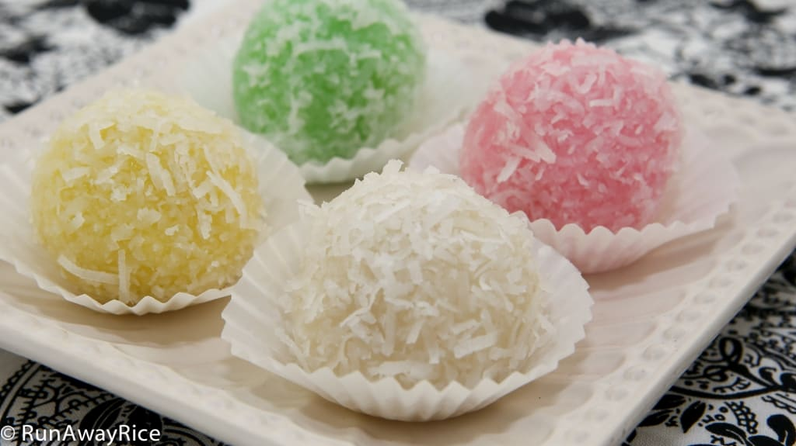
Lo Mai Chi
Het is een van de meest standaard gebakjes
in Hong Kong. |
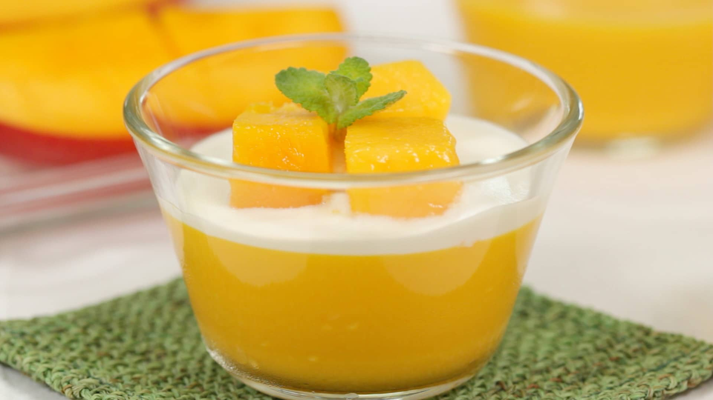
Mango pudding
Dit is er een die je trek in mango zal stillen. |
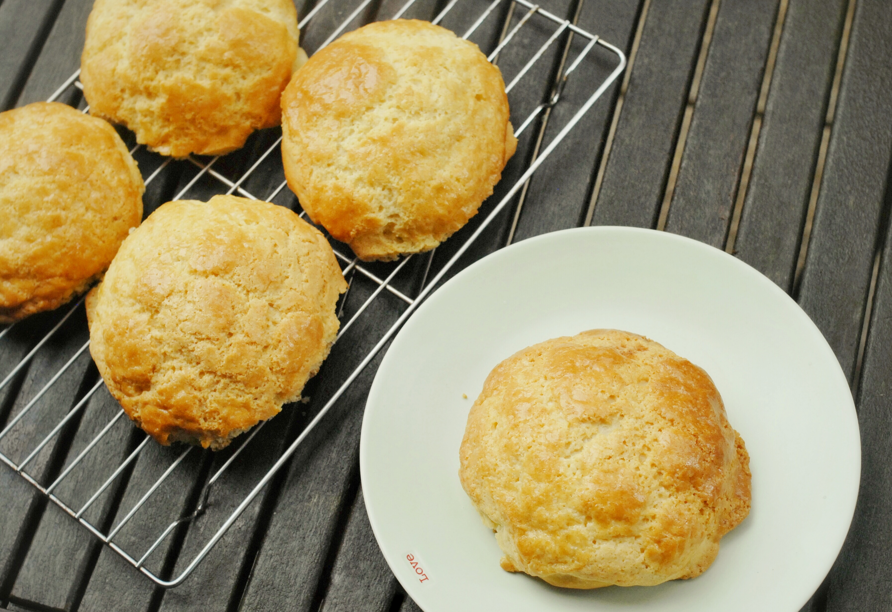
Bolo bao
Een soort zoet broodje dat vooral populair is |
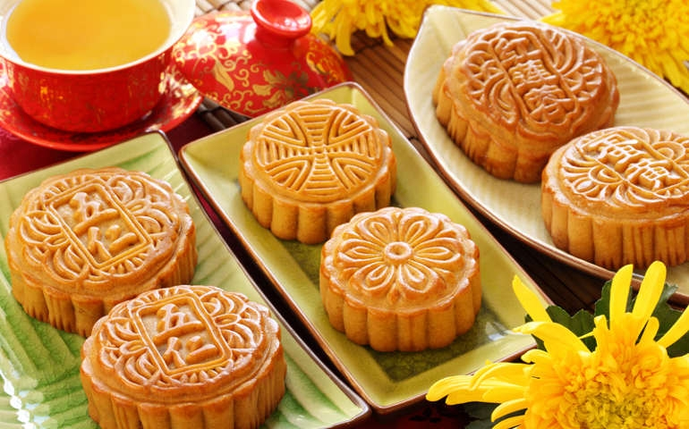
Maancake
Maancakes zijn traditionele ronde cakejes, |
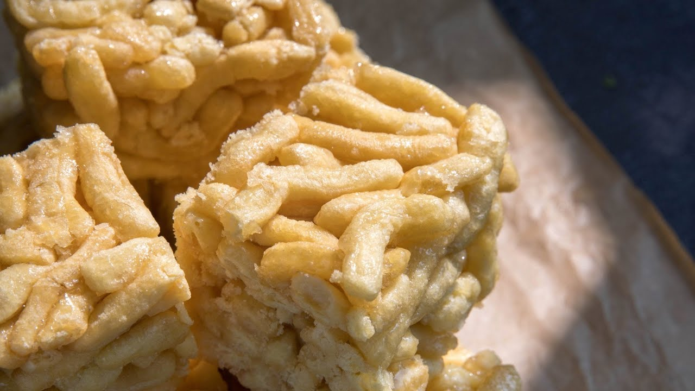
Sachima
Ze blijven zoet knapperig en lekker. |